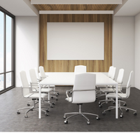
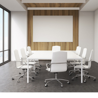
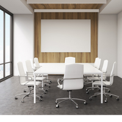
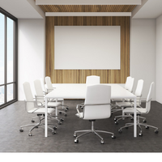
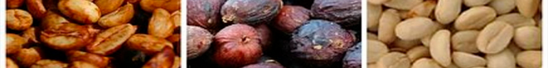
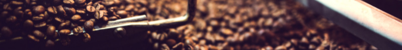

Spiti es una cadena de cafeterías de cafe de especialidad y producción artesanal propia, cuya experiencia de marca se vive en sus exclusivos locales con oficinas aptas para co-work. Comenzamos nuestro trabajo con la promesa de una bebida preparada a la perfección, pero es mucho más que eso; en realidad, se trata de relacionarnos con las personas. Soñamos con establecer lugares diseñados con todo el confort y un ambiente distendido para que el cliente pueda disfrutar de la calidad premium de nuestros productos, como para realizar sus tareas de la facultad, realizar sus proyectos u organizar un area de estudio para un final con una rica y caliente taza de café.
Crear una cultura de calidez y pertenencia, donde todos se sientan bienvenidos.
Establecer un ambiente donde los trabajadores sean capacitados y motivados a desarrollar el más alto potencial de productividad. Con gente orgullosa de sus valores y gente de éxito sin importar el puesto que desempeñe.
Estamos comprometidos a convertirnos en recursos positivos: dar más de lo que tomamos del planeta. Almacenaremos más carbono del que emitimos, eliminaremos los desechos y conservaremos y repondremos más agua dulce de la que usamos.

Nuestro café, proveniente de fincas seleccionadas, tostado por nosotros mismos y servido en bebidas calientes o frías por nuestros baristas certificados internacionalmente por la SCA (Speciality Coffee Association). Ademas, toda la carta desarrollada por nuestra Chef, mantiene la misma idea detrás: Encontramos los mejores ingredientes para realizar esas recetas que hemos soñado, preparado y perfeccionado para poder dejar lo mas rico pero tambien aquello que es único. Estamos en cada proceso de preparación sobre todo lo que ofrecemos.
Es nuestro compromiso realizar negocios de manera que contribuyamos positivamente con todos y con nuestro planeta, desde la manera en la que compramos el café y disminuimos el impacto en nuestro ambiente, hasta la forma en la que nos involucramos con nuestras comunidades Y gracias a que estás con nosotros, vos también formas parte de Spipti.
